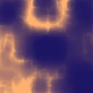

프랙탈 산등성이

레이어의 불투명한 부분을 날카롭고 불규칙한 프랙탈 노이즈 산등성이로 채웁니다.
설정
| 설정 | 유형 | 범위 | 기본값 |
|---|---|---|---|
| 오프셋 | 점 (X, Y) | -5000 px~5000 px | 0 px, 0 px |
| 변화 | 숫자 | -50~50 | 0 |
| 크기 | 숫자 | 0.01~50 | 1 |
| 늘이기 | 점 (X, Y) | 0.01~10 | 1, 1 |
| 강도 | 숫자 | 0.1~3 | 1 |
| 시드 | 숫자 | 0~5 | 0 |
| 색상 1 | 색상 | – | #000000 |
| 색상 2 | 색상 | – | #FFFFFF |
| 알파 | 숫자 | 0%~100% | 100% |
| 옥타브 | 숫자 | 1~9 | 6 |